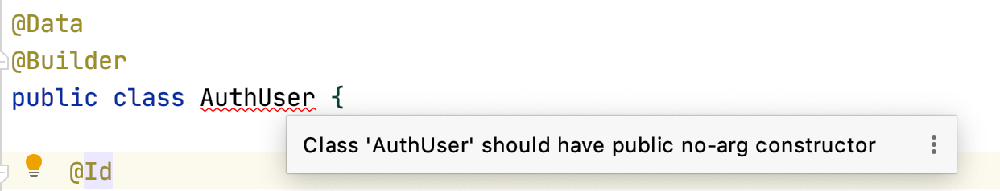
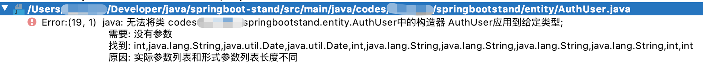
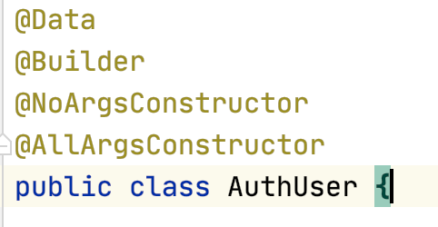
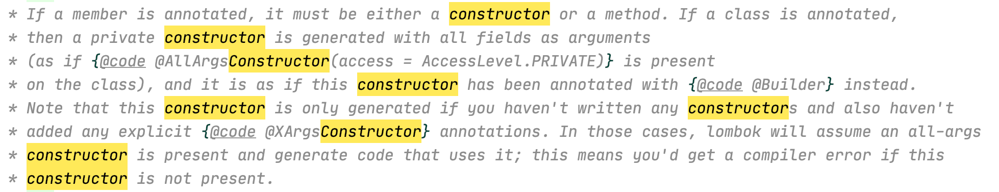

Lombok 是 Java 开发的一件利器，它可以减少大量模板代码的使用。在其中最常使用到的注解应该就是 @Data ，可以在编译时自动生成 getter、setter、
equals、hashcode 等方法。而 @Builder 则用来快速实现 builder 模式。但是，如果两者同时使用却会产生一些意想不到的报错。
如果单纯在 class 上添加这两个注解，IDE 会提示缺少无参构造器。

在此基础上添加 @NoArgsConstructor 注解后则会直接报错。

然后你会在使用谷歌或者百度之后学会再加一个 @AllArgsConstructor 注解，发现问题解决了。

首先，为什么在 @Data 的基础上添加 @Builder 会出现缺少无参构造器的问题
这个其实比较好理解。无参构造器就是 class 的默认构造器，如果你没有显式声明它，那么在编译时，编译器发现你没有显式声明的构造器，就会自动生成一个无参构造器。
而添加了 @Builder 后，Lombok 为我们添加了一个全参构造器，编译器找到了显式声明的构造器，却没有显式声明的无参构造器，则会编译失败。
然后，添加无参构造器后方法参数问题
手动声明无参构造器之后，@Builder 注解会调用另一段逻辑：

简单来说，如果源码中没有声明构造器，则自动生成全参构造器；若你已经声明了一个构造器，那么它就放弃生成。
但是 builder 模式的最后一个动作，build，还是默认调用全参的构造器来生成对象。这才造成了 期望是个无参构造器，获得的参数列表却不一样 的报错。
总结
当你希望同时使用 @Data 和 @Builder 注解时，记住需要自己显式声明 无参构造器 和 全参构造器。这可以通过添加 @NoArgsConstructor 和 @AllArgsConstructor 注解实现。
当然，你也可以不用注解，自己写代码。IDEA 可以快速创建构造器。